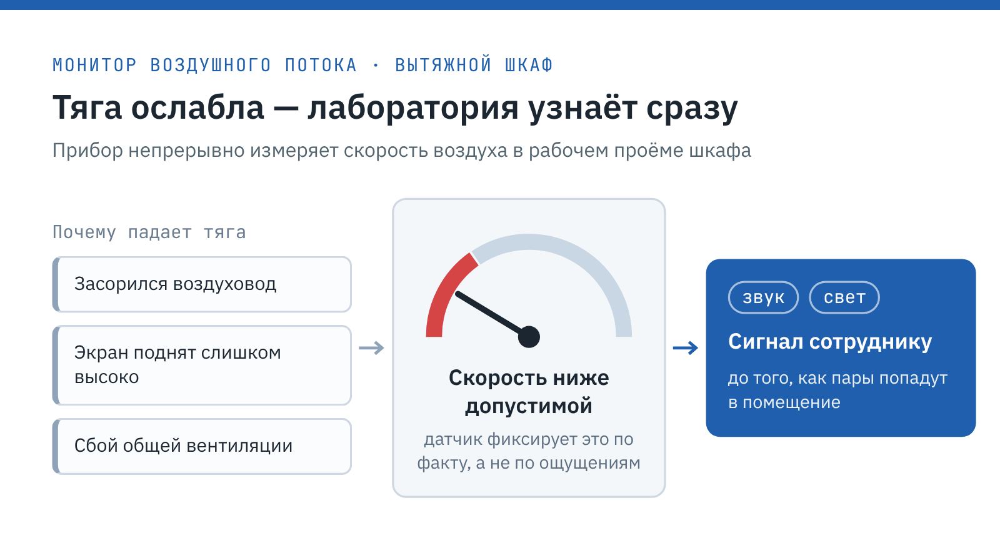

Simple PRO · Кейс · B2B
Кейс Simple PRO о переоснащении лаборатории ГосНИИИ военной медицины
С 2026 года пишу кейсы для Simple PRO, российского завода лабораторной мебели. Компании нужен раздел «Проекты», который продаёт сам: закупщик и заведующий лабораторией видят в нём свою задачу и готовое решение. За это время сдала больше 20 кейсов для нефтегазовых компаний, отраслевых НИИ и госучреждений с эскизами, таймлайнами, таблицами доработок и инфографикой.
Simple PROsimple-pro.com
Simple PRO — российский завод лабораторной мебели, работает с 2002 года. Собственное производство площадью 7000 м² выпускает больше 26 тыс. изделий в год, офисы в Санкт-Петербурге и Москве, клиентов больше 9 тыс.: от отраслевых НИИ до промышленных холдингов.
- Площадка
- Сайт simple-pro.com, раздел «Проекты»
- Формат
- Кейс для раздела «Проекты»
- Год
- 2026
Задача
Показать учреждениям со старым фондом, что лабораторию можно обновить без перепланировки: мебель подгоняют под щиты и коммуникации на стенах. Для Simple PRO это аргумент в конкурсах по госзакупкам, где выигрывает экспертиза.
Решение
Объяснила пользу мониторов воздушного потока через причины падения тяги и схему сигнала. Три доработки свела в таблицу «задача, причина, решение» и раскрыла каждую с размерами из эскизов, а финал завела на CTA с бесплатным 3D-эскизом.
Результат
Кейс сдан вместе с проектом в октябре 2026 года и принят без правок. Таблица доработок и схема монитора дают отделу продаж готовый ответ на частый вопрос клиентов «а встанет ли мебель в наше старое помещение».
Лабораторная мебель для ГосНИИИ военной медицины Минобороны России
Государственный научно-исследовательский испытательный институт военной медицины Министерства обороны Российской Федерации (Санкт-Петербург) проводит исследования в интересах обороны и безопасности страны. Здесь разрабатывают и испытывают медицинские средства защиты личного состава войск и технику медицинской службы.
Simple PRO работает с институтом примерно с 2017 года. За это время мы выполнили несколько проектов, и сотрудники ГосНИИИ ВМ хорошо знают нашу продукцию. В сентябре 2026 года начался очередной: переоснащение небольшой лаборатории, оборудованной много лет назад.
Коротко о проекте
- Заказчик: ГосНИИИ ВМ Минобороны России, Санкт-Петербург, — работаем вместе примерно с 2017 года.
- Объект: небольшая испытательная лаборатория в старом помещении.
- Закупка: конкурс через систему госзакупок.
- Сроки: договор в сентябре 2026 года, окончание работ — в октябре.
- Доработки: мониторы воздушного потока, вырез в гардеробном шкафу, декоративные панели, антресоли.
Направления работы института
ГосНИИИ ВМ ведёт полный цикл — от научной идеи до проверки готового изделия. Работа строится по трём направлениям:
- Организация исследований. Планирование и научное обеспечение работ по заказу Министерства обороны.
- Разработка. Создание медицинских средств защиты военнослужащих и техники для медицинской службы.
- Испытания. Проверка свойств и надёжности новых средств в лабораторных условиях.
К мебели испытательной лаборатории здесь особые требования. Сотрудники работают с химически активными веществами, растворами и аэрозолями, поэтому рабочие поверхности должны выдерживать агрессивную среду. Персонал защищают прежде всего вытяжные шкафы: они удаляют пары из рабочей зоны раньше, чем те попадут в воздух помещения. Не менее важна продуманная расстановка, при которой пути эвакуации и подходы к щитам остаются свободными.
Запрос на переоснащение
Институт обновляет лаборатории по очереди. Новое обращение пришло от службы снабжения: нужно было заменить мебель в одной из старых лабораторий. Специалисты хотели заранее увидеть, где встанет каждое изделие, и наши дизайнеры подготовили планировку с визуализацией.

Сотрудники института знали каталог по прошлым проектам и сразу выбрали модели, поэтому почти все пожелания удалось выполнить серийными изделиями. Отдельно заказчик попросил доукомплектовать вытяжные шкафы мониторами воздушного потока. Прибор непрерывно измеряет скорость воздуха в рабочем проёме и подаёт звуковой и световой сигнал, как только она опускается ниже допустимого значения.
Тяга может ослабнуть незаметно для сотрудника: из-за засорения воздуховода, слишком высоко поднятого экрана или сбоя общей вентиляции. Монитор сообщает о проблеме сразу, а не после того, как пары попали в помещение.

Для института, который сам разрабатывает средства защиты, такой контроль — естественная часть требований к безопасности. Мониторы устанавливают на шкафы ещё на производстве, и лаборатория получает оборудование, готовое к работе.
Доработки под старое помещение
Помимо мониторов, при проектировании возникли ещё три задачи. Все они связаны с особенностями старого помещения: инженерными системами на стенах и нехваткой места для хранения.
| № | Задача клиента | Причина | Решение Simple PRO |
|---|---|---|---|
| 1 | Сделать вырез в задней стенке гардеробного шкафа | На стене находится автомат отключения питания лаборатории, к нему нужен постоянный доступ | Выполнили вырез в задней стенке шкафа |
| 2 | Добавить декоративные панели на пристенные столы | Закрыть участки стен, по которым проходят коммуникации и провода | Установили декоративные панели |
| 3 | Установить антресоли на шкафы | Получить дополнительное место для хранения | Разработали антресоли для шкафов |
Гардеробный шкаф высотой 2000 мм встал вплотную к стене с электрощитом. Проём 320 × 220 мм в верхней части задней стенки открывает доступ к автомату, и отключить питание можно, не сдвигая мебель. Вырез расположен выше крючков для одежды и не мешает пользоваться шкафом.

На пристенных столах шириной 1205 мм со стеллажом-надстройкой смонтировали по две панели — нижнюю и верхнюю. Они закрывают пространство между полками, защищают провода от случайных повреждений и служат аккуратным фоном для розеток на надстройке.

Антресоли 604 × 598 × 600 мм с двумя дверцами крепятся одновременно к шкафу и к стене. Так они добавляют места для хранения, не занимая пол.

Крепёж входит в комплект, а места под него заложены в конструкцию, поэтому монтаж не требует доработок на объекте.
Сроки и ход работ
Закупки института всегда проходят через конкурс, и Simple PRO участвует в них на общих основаниях, соперничая ценой и характеристиками. Основные вехи проекта:
- закупка — конкурс через систему госзакупок;
- заключение договора — сентябрь 2026 года;
- окончание работ — октябрь 2026 года;
- текущий этап — сборка и установка мебели.
Уложиться в короткий срок между подписанием договора и монтажом помогло собственное производство. Изделия выпускают на заводе Simple PRO, и доработки вроде выреза или антресолей не задерживают поставку.
Что изменилось в лаборатории
Пожелания заказчика выполнены полностью. Вот что изменилось после переоснащения:
- Вытяжные шкафы предупреждают сотрудников о падении тяги звуковым и световым сигналом.
- Автомат питания остаётся доступным, хотя перед ним стоит гардеробный шкаф.
- Коммуникации на стенах скрыты за панелями и защищены от повреждений.
- Антресоли добавили места для хранения без расширения помещения.
Сотрудники получили обновлённую лабораторию на прежней площади. Перепланировка не понадобилась: мебель подогнали под существующие инженерные системы.
Проект лаборатории от Simple PRO
Электрощиты и проводка на стенах старого помещения не помешают установке новой мебели, если учесть их на этапе планировки. Пришлите чертёж с размерами, отметками окон, дверей и точек подключения, и за 5 рабочих дней мы подготовим бесплатный 3D-эскиз.
Серийные лабораторные шкафы, столы и вытяжное оборудование можно купить по каталогу или заказать с доработками. Для консультации звоните 8 (800) 222-32-97 или пишите на info@simple-pro.com.